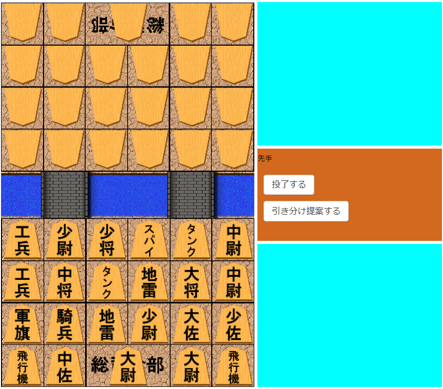

軍人将棋は、１体１の対人ボードゲームです。
将棋のようにターン制ですが、互いの駒は裏向きのままで戦うため、その点で異なります。
盤には46マスあり、下側が自陣です。
一番下には司令部があり、このマスには一つの駒しか置けません。

以下のような16種類の23駒を自陣に配置することからゲームが始まります。
このように23駒全てを自陣に配置し、相手も配置し終えると対局が始まります。
対局が始まると、相手の配置は裏向きでどれが何の駒か分からないようになっています。（もちろん相手から見てもそうです）
基本的な勝利条件は、「相手の総司令部に少佐以上の地位を持つ駒が到達する」ことです。
ゲームの進め方は、自分のターンのとき、空きマスもしくは相手の駒のあるマスに駒を動かします。
相手の駒とぶつかると戦闘が発生します。強い駒の方だけが生き残ります。
例：タンクが生き残り、相手の駒が死んだ
したがって、相手の駒はタンクよりも弱かったことがわかります。

駒の強さと移動のルールをまとめた表がこちらです。（クリックで拡大）
一見するとややこしそうですが、まとめますと、
- 基本的には「大将＞中将＞少将＞飛行機＞タンク＞大佐＞・・・＞少尉＞騎兵＞工兵＞スパイ＞軍旗」
- スパイは大将に勝つ
- 地雷と戦闘すると相討ちする（ただし、工兵と飛行機には負ける）
- 軍旗の後ろに駒があるとき、軍旗は後ろにある駒と同じ強さを持つ。それ以外は、表の通りの最弱。
- 軍旗と地雷は初期配置のまま動くことが出来ません。
- 飛行機は前後左右自由に飛ぶことが出来ます。
- 騎兵とタンクは、前に駒がなければ２マス進めます（１マスでも可）
- 工兵は駒にぶつからない限り前後左右どこまでも動けます。

次は相手のターンです。自分のタンクが死んでしまいました。
これによって、相手の駒がタンクよりも強い駒（将官、飛行機のいずれか）であるということが分かります。
手数が進むと、このように駒が相手陣地に侵入する感じになります。

どちらかの佐官以上の地位を持つ駒（大将、中将、少将、大佐、中佐、少佐）が敵司令部まで到達したほうが勝ちです。
また、佐官以上の地位を持つ駒がなくなったとき、負けとなります。
対局終了すると、このように最初の陣形から、相手の駒も見えた状態で振り返ることが出来ます。